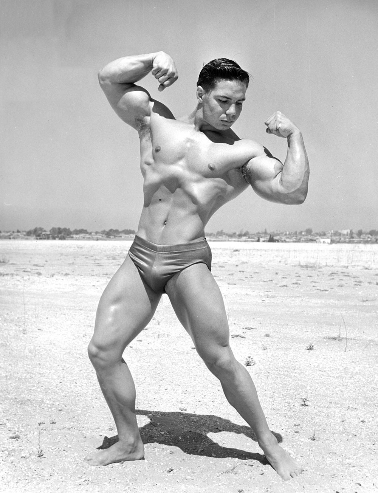
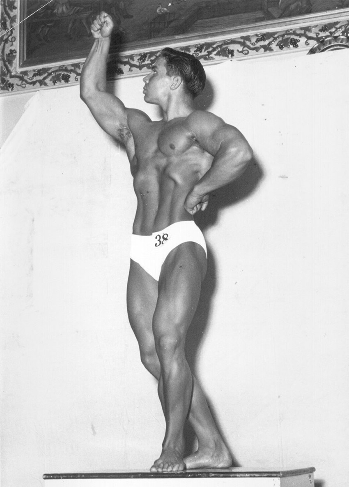

Throughout bodybuilding history, contests have been won for various reasons other than someone being the most well-developed, aesthetically pleasing. Bodybuilding is a subjective sport, and the definition of perfection differs from person to person. Contests have been won due to physical attractiveness, charisma, etc. In its early years, the Mr. America contest winner needed to be a good-looking and well-spoken individual who would be a great representative of America. It is easy to see how someone as attractive as Steve Reeves, charismatic as Arnold Schwarzenegger, or as charming as John Grimek might have an edge in a subjective sport such as bodybuilding. But has a bodybuilding contest ever been won because of kindness?
Bill Pearl is and will be bodybuilding’s greatest gentleman. In a sport where competitors are often stereotyped as brutes with IQs not breaking triple digits, Pearl broke the mold. He has been a great representative of bodybuilding for eight decades now and usually praised his opponents instead of bashing them. In the rare case Pearl said something derogatory about someone it was always worth noting. Steve Reeves brought bodybuilding aesthetics, Arnold Schwarzenegger brought it into the mainstream, and Bill Pearl brought it decorum. To say Bill Pearl is a nice guy is an understatement.
Bill Pearl is also one of the most successful bodybuilders to ever compete in major contests winning 10 of the 12 contests he entered. His worst showing was taking 3rd place in the first contest he entered at age 21 (Mr. San Diego) and he took 2nd place in the 1956 NABBA Pro Mr. Universe losing to the great Jack Delinger. The only bodybuilder with a better record was the immortal and undefeated John Grimek.

The contest in question was the 1971 NABBA Pro Mr. Universe held September 17th in London, England. Pearl was reluctantly competing and had every right to be angry. He had been comfortably retired for the past four years and was now back on stage at almost 41 years of age feeling like he had been pulled out of retirement for the wrong reasons, and only to please others.
He had been called out by Joe Weider and Arnold Schwarzenegger in several of Weider’s muscle magazines. Apparently, Weider was upset that many of his readers frequently wrote letters to the magazine about Pearl, praising him as the greatest bodybuilder ever. Nautilus founder, Arthur Jones, and Sergio Oliva also challenged Pearl to come out of retirement for the contest. Jones and Pearl had gotten into a spat about the effectiveness of Nautilus equipment vs. free weights and Jones had been training Oliva exclusively on his equipment to try and promote his products as the builder of champions. Jones had offered Oliva $5,000 if he could beat Pearl in the contest. Pearl didn’t have any help from his longtime trainer, Leo Stern, who also challenged him to come out of retirement and shut up the critics.
Facing Pearl that day were some of the greatest bodybuilders to ever walk the stage: Sergio Oliva, Reg Park, and Frank Zane. It was arguably one of the greatest bodybuilding contests ever assembled and certainly would have been the greatest if Weider would have let Arnold compete in it. However, Weider had recently enacted a rule that any athlete would be suspended from the IFBB for a year if they competed in an event outside of the IFBB which would have made Arnold ineligible to compete in the Mr. Olympia contest the following weekend.
Before the competition began an event occurred backstage that might have played a role in Pearl winning the contest. The competitors were backstage pumping up preparing to go out and pose when according to his autobiography, Beyond the Universe: The Bill Pearl Story:
A young Belgian boy, about eleven years old, had been brought backstage, to see and possibly meet some of the contestants. The father nudged the boy, his autograph book in hand, toward Sergio. BIG MISTAKE! The moment the boy got into his space, Sergio shouted something like, "Get the hell out of here! I don't have time for autographs! See me after the show!" The outburst shocked the father and son to the point where you could actually see dismay on their faces.

Regaining his composure, the father began pushing the boy toward me. The boy walked over, his head down, autograph book at arm's length, afraid to make eye contact. Having seen the crestfallen look on the child's face, I signed my name and then picked him up and placed him on my shoulder as he flexed his skinny arm while his father snapped a photograph.
The next time I saw his father, he was looking at me while sitting at the judge's table with a smile on his face, nodding his head up and down, mouthing the word, "Yes--yes--yes."
While this is certainly an interesting story, and no doubt true if told by Bill Pearl, it begs the question; Did a judge potentially switching his vote from Oliva to Pearl make any difference? According to an article written for Muscular Development magazine shortly after the contest by its General Secretary, Oscar Heidenstam:
It was Pearl with 10 firsts, Oliva with four firsts. So Bill took his fourth Mr. Universe title, and we doubt if there will ever be another Mr. Universe contest like that again.
Based on Heidenstam’s article it appears there were a total of fourteen judges and 10 cast their first-place ballots for Pearl and 4 cast theirs for Oliva. Based on this information, if the Belgium judge in question had voted for Oliva instead of Pearl the final first place vote tally would still have given Pearl first place easily at 9 first place votes to 5.
While this story is certainly interesting, it appears Pearl would have won the contest easily even without the potential switched vote from the Belgium judge. It is worth noting however, this story proves that factors outside of the objective judging of one’s physical perfection seem to play a role in bodybuilding. It is human nature for our perception of others, including their attractiveness, to evolve as we learn more about their character. It would follow then that a great champion in a lineup of perfect bodies would have to exude some extra intangible quality like confidence, charisma, or maybe even kindness.